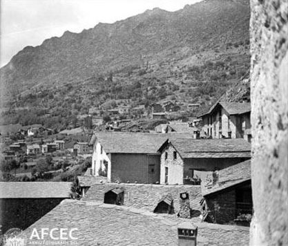

1978La Reforma de 1978Contemporània
Cap proposta no va guanyar, però el Consell va passar de 24 a 28 membres
Context històric
El 1977 el Consell General i els coprínceps van acordar consultar els electors sobre una reforma política. El 28 d'octubre es van votar sis propostes i cap no va obtenir majoria. El 16 de gener de 1978 es va repetir la consulta amb dues propostes —la 6, d'una agrupació política, i la 7, del Consell General— i l'opció «cap de les anteriors». Aquesta va ser la més votada (35,6 %), per davant de la 7 (32,8 %) i de la 6 (31,6 %), amb una participació del 65 % sobre un cens de 3.235 electors.
Tot i el resultat, el 1978 va canviar l'estructura del país: es va crear la setena parròquia, Escaldes-Engordany, i els consellers generals van passar de 24 a 28. Aquell any el Consell va presentar als coprínceps una Memòria per a la Reforma de les institucions, que plantejava convertir el país en un Estat reconegut internacionalment.
El 15 de gener de 1981 es va crear el Consell Executiu, sense competències en seguretat ni afers exteriors; la web del Consell General el qualifica d'insuficient. Per això 1978 es pot llegir com una reforma limitada o com un primer pas.
Dades, lectures i dubtes
- Dada
- Resultats de les consultes (font: Viquipèdia en anglès, a partir de Direct Democracy), nova parròquia i 28 consellers, Memòria per a la Reforma i Consell Executiu el 15 de gener de 1981 (Consell General).
- Interpretació
- Que 1978 sigui una reforma limitada o un primer pas.
- Qüestió oberta
- La data exacta de creació de la parròquia i del pas a 28 consellers: el Consell General només dona l'any.
Multimèdia

Fonts
- Consell General d'Andorra, «El Consell en la història · 3. El segle XX»
- Viquipèdia (anglès), «1978 Andorran political reform referendum» (cita Direct Democracy)
- Constitució del Principat d'Andorra, art. 1.5 (set parròquies, entre elles Escaldes-Engordany)
- Arxiu Comunal d'Andorra la Vella, Document del mes núm. 42 (2021)
- Enciclopèdia Catalana, «Consell General de les Valls d'Andorra»
- Viquipèdia, «Referèndum constitucional d'Andorra de 1993» (antecedents de 1978 i 1981)